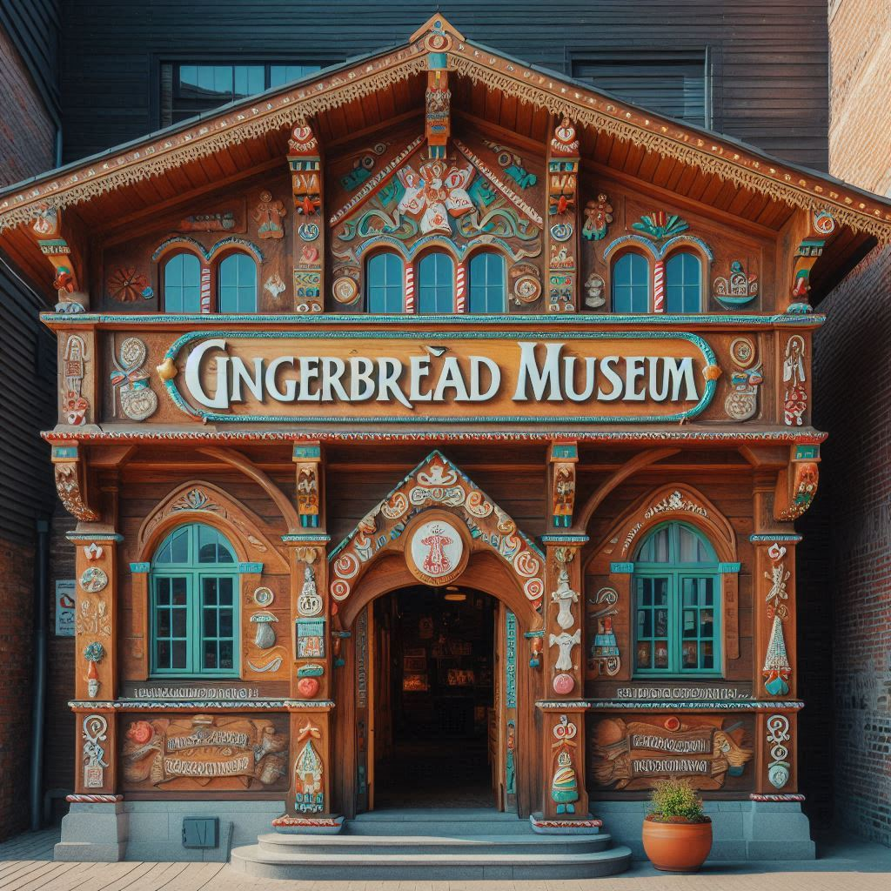

Top three activities to do at Toruń

Visit the Living Museum of Gingerbread
This unique museum offers interactive exhibits and workshops on the traditional art of making Toruń gingerbread, a famous local delicacy.Explore the Old Town Hall
This stunning piece of medieval architecture is one of the greatest secular buildings in Europe, with a museum inside and a breathtaking view from the top of its tower.Enjoy a relaxing cruise on the Vistula River
Take a scenic boat ride to see the beautiful panoramas of Toruń from the water, offering a unique perspective of the city's historic skyline.